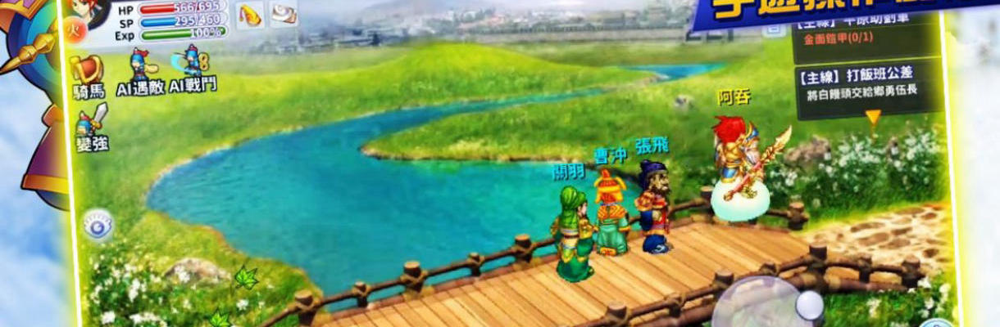

Trước đây rất lâu, khi mà tuổi của thế giới này còn rất rất trẻ, cụ thể trước bao lâu, không ai có thể khẳng định. Từ lúc vũ trụ còn sơ khai, trên địa cầu vừa mới bắt đầu thời đại của sự sống cao cấp. Lúc ấy, trên địa cầu này có vài loại chủng tộc cư trú, chủng tộc người trên thế giới lúc ấy hoàn toàn bất đồng với văn minh hiện tại của nhân loại. Bọn họ không có khoa học kỹ thuật, nhưng lại có pháp thuật thần kỳ - đó là một thời đại thần thoại. Sau đó, khi mà văn minh của họ phát triển tới một cảnh giới cao nhất, bọn họ cũng đã đủ năng lực, có thể đả thông không gian, đi đến một không gian khác "TIÊN GIỚI". Những sinh mạng ở trên Tiên Giới được gọi là "Thần Linh"
Điều này vốn là một chuyện rất tốt, bởi vì sau khi phát hiện ra thế giới mới, ít nhất các chủng tộc sẽ không cần phải đấu đến ngươi chết ta sống trên thế giới bị giới hạn này. Vì vậy các chủng tộc đều dùng thần lực thần kỳ của mình, mở mang không gian mới cho riêng mình. Bọn họ đều mong muốn mở rộng lãnh thổ mới của mình. Thế nhưng bọn họ nhanh chóng phát hiện ra một vấn đề... Họ căn bản không có đủ khả năng. Bởi vì dù dùng thần lực đả thông không gian mới, nhưng để duy trì không gian đó nhất thiết cũng phải có đủ thần lực, năng lượng phải duy trì liên tục không dứt, nếu không, không gian đó sẽ suy sụp, thậm chí biến mất.
"Thần Linh" có chết không? Có, thần linh cũng có tuổi thọ. Khi tuổi thọ hết đi là lúc thần linh ngã xuống, thần lực để duy trì "Tiên Giới" ngày càng cạn kiệt. Khi tình hình càng ngày càng nguy cấp, các thần linh quyết định hạ phàm xuống "Nhân Giới". Thần Linh truyền thụ cho Nhân Loại các phương pháp tu luyện mà khiến cho một số người bình thường có thể tu luyện thành tiên, bổ sung cho những thần linh ngã xuống. Thậm chí một số sinh vật không phải loài người cũng có thể tu luyện thành tiên - "Tôn Ngộ Không".
Nam Đẩu Tinh Quân và Bắc Đẩu Tinh Quân dùng đến pháp thuật cấm kỵ, đi xuyên qua thời gian, để đem đến những Nhân loại có tiềm lực tốt trở về thời kỳ loạn Tam Quốc tu luyện. Vũ trụ Tam Quốc - Vũ trụ Tam Giới - thời kỳ loạn giới Tiên-Nhân-Ma.
Nộp CV cho 2 vị thần ngaySever không đặt nặng vào cày cấp. Vì vậy, ở bản cập nhật lần này, chúng tôi đưa ra thông tin của sever hiện tại như sau:
Hạng Tịch (chữ Hán: 項籍; 232 TCN - 202 TCN), biểu tự là Vũ (羽), do đó ông được biết đến rộng rãi qua cái tên Hạng Vũ (項羽) hoặc Tây Sở Bá vương (西楚霸王), là một nhà chính trị, một tướng quân nổi tiếng, người có công trong việc lật đổ Nhà Tần và tranh chấp thiên hạ với Hán Cao Tổ (Lưu Bang) đầu thời Nhà Hán.
Quan Vũ (chữ Hán: 關羽, bính âm: Guān Yǔ, 162－220),[1] tự Vân Trường (雲長), là một vị tướng nổi tiếng thời kỳ cuối nhà Đông Hán và thời Tam Quốc ở Trung Quốc. Ông là người đã góp công lớn vào việc thành lập nhà Thục Hán, nhưng thất bại của ông là một trong những nguyên nhân dẫn đến thất bại của Lưu Bị nói riêng và nhà Thục Hán nói chung.
Dương Hỗ (chữ Hán: 羊祜; 221-278) còn gọi là Dương Hộ hay Dương Hựu, tên tự là Thúc Tử, người Nam Thành, Thái Sơn, Thanh Châu[1], là nhà chiến lược, nhà quân sự, nhà chính trị và nhà văn nổi tiếng cuối thời Tam Quốc, đầu Tây Tấn trong lịch sử Trung Quốc. Ông có vai trò vô cùng quan trọng trong việc trù bị cho công cuộc thôn tính nhà Đông Ngô, thống nhất Trung Quốc.
Hạ Hầu Đôn (chữ Hán: 夏侯惇;155 – 220), tên tự là Nguyên Nhượng (元讓) là công thần khai quốc nhà Tào Ngụy thời Tam Quốc trong lịch sử Trung Quốc. Ông là anh họ của Hạ Hầu Uyên và cũng là một trong những tướng trung thành với Tào Tháo, góp công trong những trận đánh với Lưu Bị, Tôn Quyền, Lữ Bố.Ông Được Phong Là,Trung Hầu,忠侯.
Trương Giác (chữ Hán: 張角; 140 -184)có sách ghi Trương Giốc là thủ lĩnh cuộc khởi nghĩa Khăn Vàng, hay còn gọi là quân Khăn Vàng vào cuối thời kỳ nhà Đông Hán trong lịch sử Trung Quốc. Ông thành lập và lãnh đạo đội quân khăn vàng (triều đình nhà Hán gọi là giặc Khăn Vàng) chống lại triều đình nhà Hán nhưng đã bị triều đình đàn áp. Ông là người huyện Cự Lộc, tỉnh Hà Bắc, Trung Quốc, đã từng đỗ tú tài. Trương Giác có hai người em là Trương Bảo và Trương Lương.

Khởi nghĩa Khăn Vàng, tức loạn Hoàng Cân hay loạn Khăn Vàng (Trung văn giản thể: 黄巾之乱, Trung văn phồn thể: 黃巾之亂, bính âm: Huáng Jīn zhī luàn, âm Hán-Việt: Hoàng Cân chi loạn), là một cuộc khởi nghĩa nông dân chống lại nhà Hán vào năm 184. Cuộc khởi nghĩa có tên này là do các lãnh tụ và binh lính khởi nghĩa đeo khăn vàng trên đầu. Cuộc khởi nghĩa này có liên hệ với phái đạo Lão bí mật và là một trong những mốc quan trọng trong lịch sử đạo Lão.